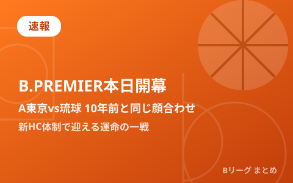
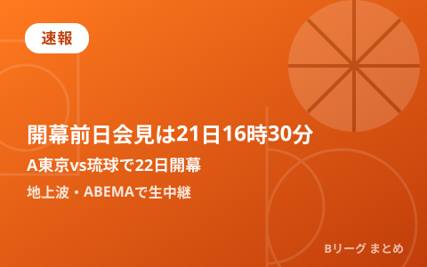
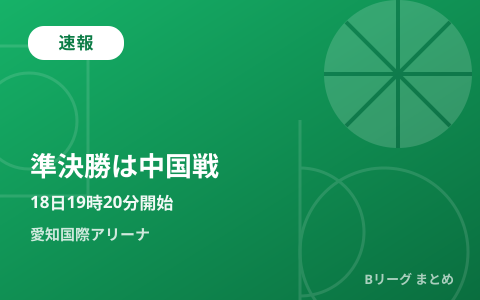
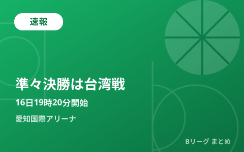

公式・メディアの新着
もっと見る ›配信元の見出しとリンクのみを自動収集しています。タップすると元記事が開きます。
2026.09.25
速報
三遠ネオフェニックスの新たな中心選手へ、22歳の新鋭・湧川颯斗の覚悟「今シーズンは自分にとって本当に勝負の年」
速報
大阪エヴェッサのヴォーディミル・ゲルンが左中手骨骨折でインジュアリーリスト入り、合田怜は左後脛骨筋腱脱臼で手術を実施
速報
インジュアリーリストの公示
2026.09.24
速報
東京サンロッカーズの山際爽吾が着実に登るトッププレーヤーへの階段(後編)「『山際って何者だ?』と言ってもらえるように」
速報
熊本県へ令和8年熊本地震に対する義援金寄付のお知らせ
速報
大型補強に成功した茨城ロボッツ、ヴィック・ローの決意(後編)「常に希望を託せる、信頼される選手になりたい」
速報
アルティーリ千葉がアジア枠にカイ・ソットを補強、昨シーズンまで越谷でプレーした身長220cmのフィリピン出身ビッグマン
速報
伊藤優月「合わせのプレーをどんどんやっていきたい」名古屋経済大学高蔵(愛知県)
速報
東京サンロッカーズの山際爽吾が着実に登るトッププレーヤーへの階段(前編)「グッドよりベター、ベターよりもベスト」
速報
大型補強に成功した茨城ロボッツ、ヴィック・ローの決意(前編)「高い前評判は誇るべき責任の重さ」
2026.09.23
速報
琉球ゴールデンキングスの新指揮官、アンソニー・マクヘンリーの信念「ここは日本のリーグ、できるだけ日本人選手を起用していく」
速報
濟木遥「自分たちから仕掛ける」佐賀清和(佐賀県)
2026.09.22
速報
琉球ゴールデンキングスの新キャプテン、松脇圭志の責任感「雰囲気が落ちている時は声掛け、ハドルを増やそうと思っています」
速報
壮絶な過去を乗り越えて鮮烈なBリーグデビュー、アルバルク東京のキヨンテ・ジョンソン「自分のスキルを披露できることがうれしい」
2026.09.21
速報
琉球ゴールデンキングスの川真田紘也、オン・ザ・コートフリーへの思い「メリットに変えられるかは自分次第」
速報
B.LEAGUE Hope PLANET ACTION「みんなでつくろう、B.LEAGUEの森」 実施のお知らせ
速報
第1回『未来のBリーグ選手を、誰よりも先に。』この夏、大活躍した日本代表15名のバスケキャリア【PR】Promoted by バスケットLIVE
2026.09.20
速報
石井陽葵「自分たちで雰囲気を作っていく」桐生市立商業(群馬県)
2026.09.19
速報
名和真緒里「勝負の場面で自分が決着をつける」県立湯沢翔北(秋田県)
速報
曽田美波「やってるつもり、から抜け出す」松徳学院(島根県)
2026.09.18
速報
大阪エヴェッサ3年目、数字にこだわらなかった牧隼利が目指す変革「得点でもっとステップアップできたら」
速報
大人気アニメ「パウ・パトロールTM」がバスケットボールをパウっと解説! 選手やチアがおなじみの曲で踊るダンス動画や、会場グリーティングも
速報
「doda PRESENTS:B.LEAGUE仕事図鑑」公開のお知らせ
速報
B.LEAGUE公式トレーディングカードから「AKATSUKI JAPANパック」が登場!日本代表に選出されたBリーグ選手をラインナップ!
2026.09.17
速報
京都ハンナリーズの岸本隆一が語る新天地への忠誠心「キングスを離れることになって肩の荷が下りたとは思っていない」
速報
労働組合日本バスケットボール選手会とのCBA(包括的な労働協約)締結に向けた 「労使間基本合意書」を締結
速報
【U18日清食品トップリーグ2026 ディビジョン2】フレミング アレキサンダー「目の前の1プレーを全力で」光泉カトリック(滋賀県)
速報
豊富な運動量と類まれなオフェンスセンスを持つ群馬クレインサンダーズの藤井祐眞の脳内「ディフェンスとリバウンドが僕らの課題」
速報
Bリーグと選手会が包括的な労働協約締結に向けた基本合意書を締結、労使協議会を設置し年4回の協議を行う予定
速報
【U18日清食品トップリーグ2026 ディビジョン2】藤本彩夢「接戦になった時のシュート力をもっと上げたい」福知山成美(京都府)
2026.09.16
速報
膝十字靭帯断裂からの復活を期す、秋田ノーザンハピネッツの田口成浩「仲間やブースターのために『このまま終わってたまるか』」
速報
【女子ワールドカップ2026】指揮官の言葉が示す、女子日本代表に突きつけられた厳しい現実(後編)JBAの確固たる指針の提示が急務
速報
オフェンス力が進化する群馬クレインサンダーズ、中村拓人が見せた変幻自在な役割「得点が取れるタイミングがあれば取りに行きます」
速報
【女子ワールドカップ2026】指揮官の言葉が示す、女子日本代表に突きつけられた厳しい現実(前編)「私にも答えは分からない」
2026.09.15
速報
富山グラウジーズの実行委員変更
速報
長崎ヴェルカの馬場雄大がプレシーズンゲームで全力を出し切る理由「まず勝ちをプライオリティにしてやっていくのが僕のやり方」
2026.09.14
速報
地域創生を目指してアソビシステムとの連携が決定! ~第一弾としてB祭応援団に「KAWAII LAB.」が就任。B祭応援ソングもリリース~
速報
『ドラフト漏れ』から島根スサノオマジックへ、新井翔太が得たモノ(後編)「新人王がある限りは、しれっと狙っていきます(笑)」
速報
FRUITS ZIPPER、CANDY TUNEを抱える『アソビシステム』とBリーグが連携!型破りなライブスポーツエンタメづくりを共に目指す
速報
『ドラフト漏れ』から島根スサノオマジックへ、新井翔太が得たモノ(前編)「『Bプレミアに残りたい』気持ちはずっと変わらない」
最終更新:
2026年09月26日 08:13
速報

速報
B.PREMIER本日開幕 A東京vs琉球は10年前と同じ顔合わせ 新HC体制で迎える運命の一戦

速報
B.PREMIER開幕前日会見は21日16時30分から 10年前と同じA東京vs琉球で22日開幕、地上波・ABEMAで生中継

速報
男子日本代表、準決勝で中国と激突 18日19時20分から愛知国際アリーナ 勝てば大会決勝進出

速報
男子日本代表、準々決勝の相手はチャイニーズ・タイペイに決定 16日19時20分から愛知国際アリーナで激突

速報
男子日本代表、本日19時に韓国戦 アジア大会グループA首位決定戦 日韓ともに開幕2連勝で激突

速報
【愛知・名古屋2026】バスケ男子日本代表、本日19時インドネシア戦で開幕 グループAは韓国・サウジアラビアと同組

速報
琉球「ISLAND GAMES 2026」9月7日開幕 千葉J・豪州パースと国際週間

速報
「B.LEAGUE 2026-27 TIPOFF CEREMONY」増上寺で開催 全55クラブの代表選手が集結、開幕まで3週間

速報
男子日本代表、本日8月31日19:10カタール戦 富樫外れ渡邊雄太が復帰の12名 W杯予選2位死守なるか

速報
男子日本代表、W杯予選Window4サウジアラビア戦は8月28日未明にABEMA・テレビ朝日系で生中継

速報
上白石萌音「Trophy」がB.LEAGUE 2026-27公式テーマソングに決定

速報
「B.LEAGUE 2026-27 TIPOFF CEREMONY」出演選手発表 富樫勇樹・馬場雄大ら全55クラブ集結

速報
女子日本代表、W杯出場12名を発表 山本麻衣は現地合流 9月4日ベルリン開幕

速報
「KOBE RISING -2026-」本日開幕 神戸ストークスが千葉ジェッツ・レバンガ北海道と対戦

速報
八村塁がパリ五輪以来の代表復帰、河村勇輝も合流 男子日本代表 8/15･16韓国戦ロスター発表

速報
B.LEAGUE UNITED 第1戦60-113大敗 本日メルボルン・ユナイテッドと第2戦

速報
B.LEAGUE UNITED 豪州遠征 平均21歳の若手精鋭がNBL強豪に挑む

速報
Bリーグオールスター2027 名古屋IGアリーナで1月15〜17日3DAYS開催、中学生バスケ大会も同会場へ

速報
アジア大会2026へ 若手躍動の男子日本代表 川島悠翔・山﨑一渉が中心格に

速報
B.LEAGUE UNITEDが豪州遠征中！精鋭10人が8月6日フェニックス戦へ〜2030年NBAへの挑戦

速報
大阪エヴェッサ 2026-27開幕ロスター確定 「DOG FIGHT」で結果を求める年に

速報
3x3女子日本代表が東京STOPで3位入賞 ウィメンズシリーズ2026

速報
B.LEAGUE初の海外主催試合「MANILA GAMES 2026」9月マニラで開催

速報
FIBAがW杯アジア予選「注目の10選手」を発表 日本代表から富永啓生が選出

速報
7月6日 日本代表vs韓国戦 視聴ガイド W杯予選Window3アウェー2連戦の見方

速報
FIBA・W杯アジア予選パワーランキング更新 日本は1つ上げて6位、7月のWindow3で中国に“借りを返せるか”

速報
男子日本代表、8月に国際試合4試合を開催へ 佐賀でモンゴル・東京で韓国と対戦

速報
河村勇輝が日本代表・第2次強化合宿に参加 7月のW杯予選Window3は出場予定なし

速報
男子日本代表、W杯予選Window3へ第2次強化合宿の23名を発表 7月に中国・韓国とアウェー2連戦
このカテゴリは1日3回を目安に最新ニュースを追加しています。